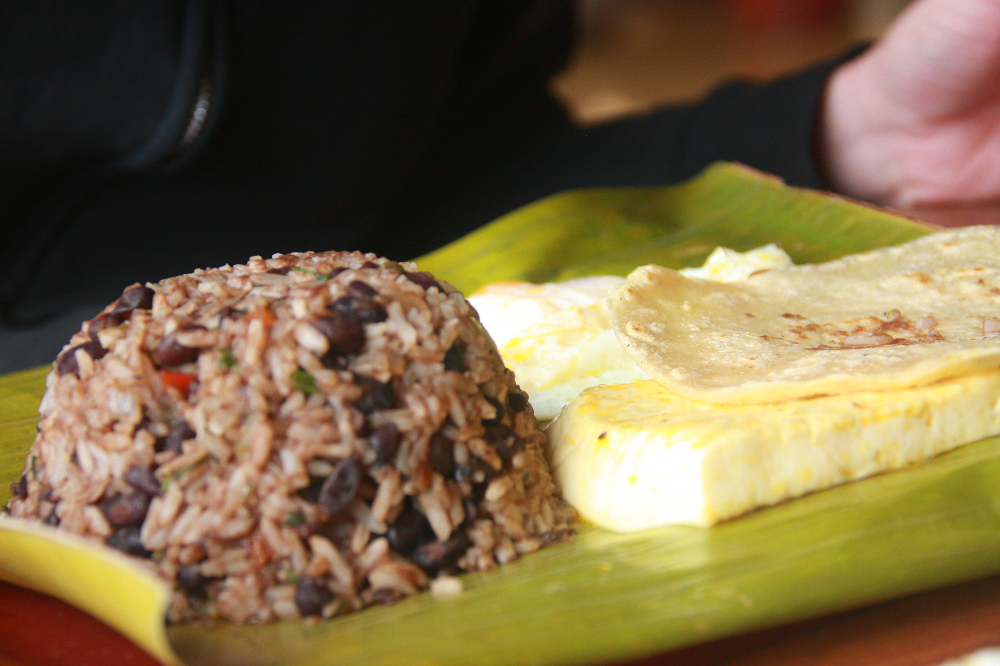

Gallo Pinto

"Costa Rican Gallo Pinto” by Legendre17, via Wikimedia Commons, licensed under CC BY 3.0.
Description
Gallo Pinto is the national dish of Costa Rica, a hearty and flavorful combination of rice and black beans cooked together with onions, peppers, and Salsa Lizano, a tangy local condiment that gives it its signature taste. Simple yet deeply satisfying, it is a staple of everyday Costa Rican life
Traditionally served as breakfast alongside scrambled or fried eggs, sour cream, and fried plantains.
Ingredients
- 2 tablespoons vegetable oil or olive oil
- 1/4 cup yellow onion, chopped
- 1/4 cup red pepper, chopped
- 1 tsp sea salt
- 2 cups black beans, cooked
- 1/4 bean broth or water
- 2 cups cooked rice
- 1/8 cup chopped fresh cilantro
- 1/4 cup Salsa Lizano
Instructions
- Cook the rice and beans ahead of time.
- Heat oil in a large skillet over medium heat. Add onion, pepper, and salt. Lightly cook until the onion is translucent.
- Add the beans with broth and toss with the chopped vegetables and oil.
- Add the cooked rice to the skillet.
- Toss until well combined with the beans and spices.
- Add the cilantro and lightly toss.
- Heat thoroughly and add the Salsa Lizano.
- Mix again and serve, preferably with fried eggs, warm corn tortillas, and a hot cup of Costa Rican coffee or agua dulce.
Home